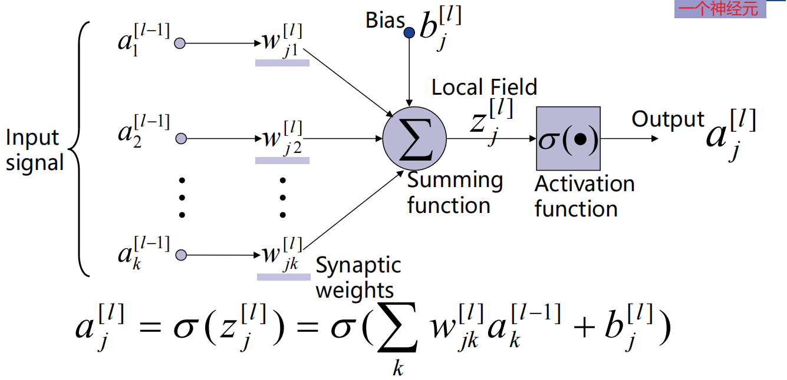
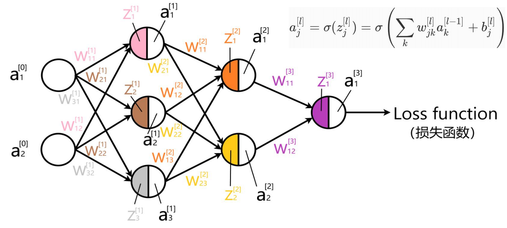
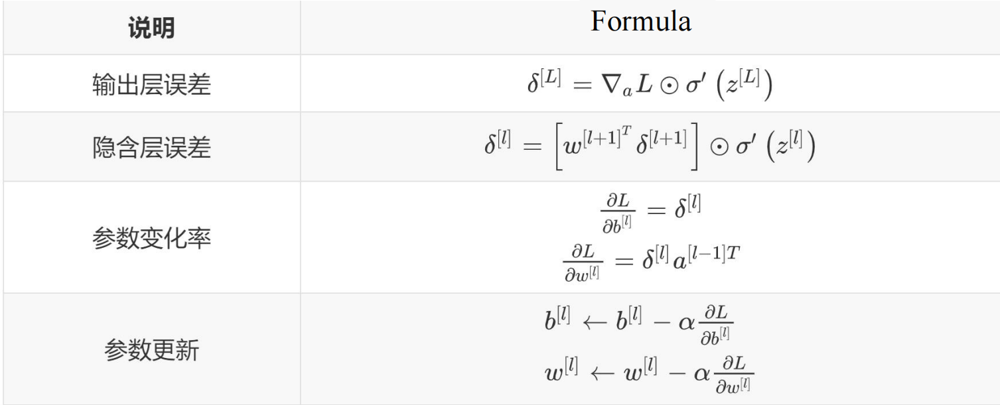
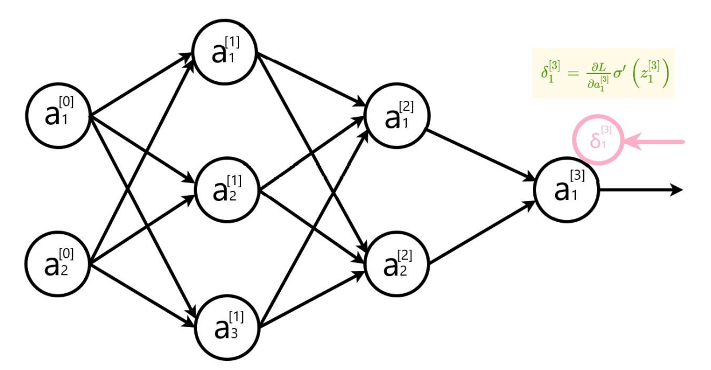
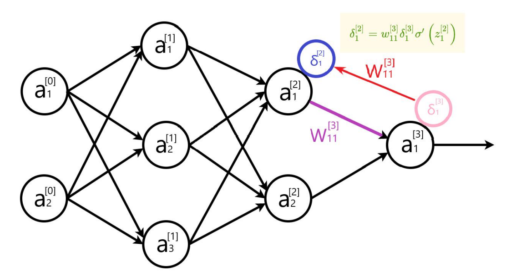
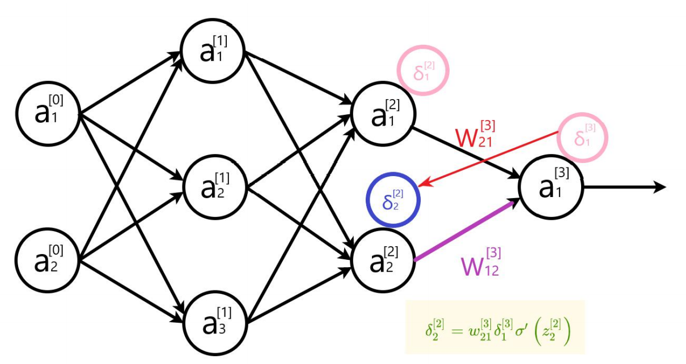
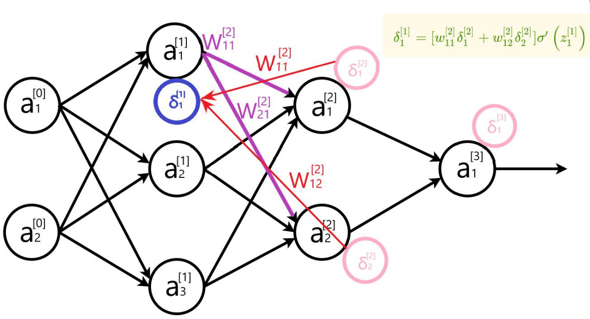
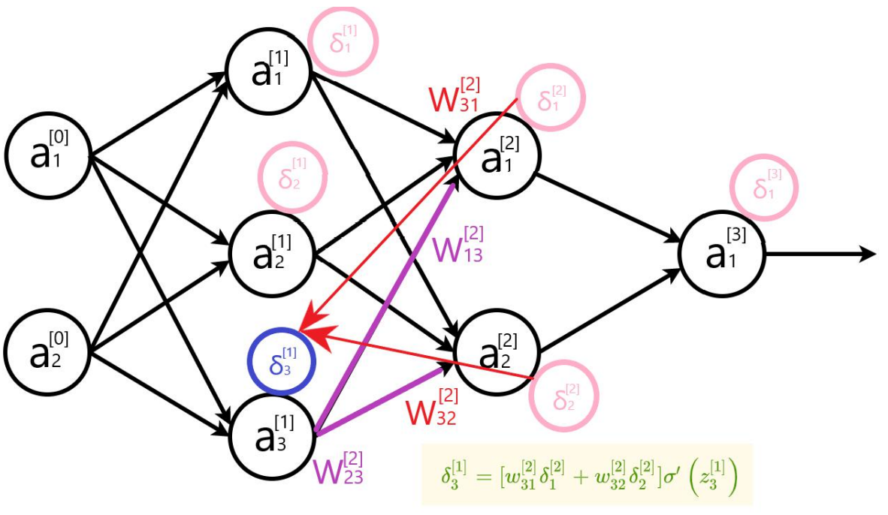
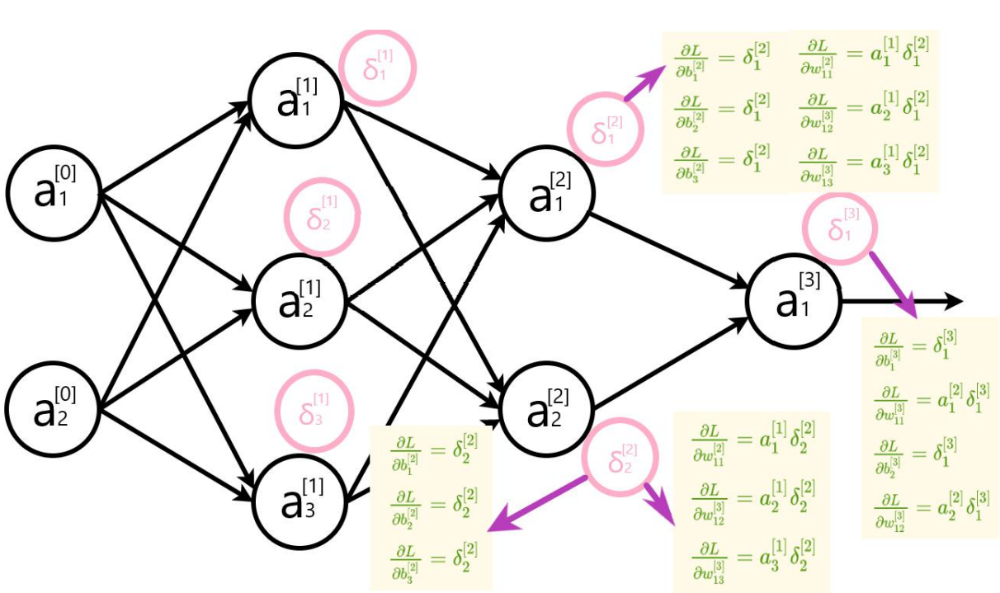

反向传播算法
反向传播算法
作为一位机器学习领域的博主，第一篇博客肯定要从反向传播算法开始啦~
简介
来自维基百科
首先是反向传播算法的历史沿用👇
弗拉基米尔·瓦普尼克引用（Bryson, A.E.; W.F. Denham; S.E. Dreyfus. Optimal programming problems with inequality constraints. I: Necessary conditions for extremal solutions. AIAA J. 1, 11 (1963) 2544-2550）在他的书《支持向量机》中首次发表反向传播算法。在1969年Arthur E. Bryson和何毓琦将其描述为多级动态系统优化方法。直到1974年以后在神经网络的背景下应用，并由Paul Werbos[7]、David E. Rumelhart、杰弗里·辛顿和Ronald J. Williams[1][8]的著作，它才获得认可，并引发了一场人工神经网络的研究领域的“文艺复兴”。在21世纪初人们对其失去兴趣，但在2010年后又拥有了兴趣，如今可以通过GPU等大型现代运算器件用于训练更大的网络。例如在2013年，顶级语音识别器现在使用反向传播算法训练神经网络。
那么反向传播算法是啥？👇
反向传播（英语：Backpropagation，缩写为BP）是“误差反向传播”的简称，是一种与最优化方法（如梯度下降法）结合使用的，用来训练人工神经网络的常见方法。该方法对网络中所有权重计算损失函数的梯度。这个梯度会回馈给最佳化方法，用来更新权值以最小化损失函数。
前向传播推导
a. 了解矩阵乘法
假设👇
$$ \textbf{A} = \begin{bmatrix} 1 & 2 \\ 3 & 4 \\ \end{bmatrix} \quad \textbf{B}=\left[ \begin{matrix} -1 & -2 \\ -3 & -4 \\ \end{matrix} \right] $$点积（通常省略 · 符号）计算如下👇
$$ \textbf{AB} = \left[ \begin{matrix} 1 \times(-1) + 2\times(-3) & 1\times (-2) +2\times(-4)\\ 3 \times(-1) + 4\times(-3) & 3\times(-2) +4 \times(-4) \end{matrix} \right]= \left[ \begin{matrix} -7 & -10\\ -15& -22 \end{matrix} \right] $$逐元素乘法如下👇
$$ \textbf{A}\odot\textbf{B} = \left[ \begin{matrix} 1 \times(-1)& 2\times(-2)\\ 3 \times(-3)& 4 \times(-4) \end{matrix} \right]= \left[ \begin{matrix} -1 & -4\\ -9& -16 \end{matrix} \right] $$b. 了解连式法则
如果将复合函数f(g(x))对x求导，需要使用链式法则， $$ \frac{\partial f(g(x))}{\partial x} = \frac{\partial f(g(x))}{\partial g(x)} \frac{\partial g(x)}{\partial x} $$
举个栗子， $$ \frac{\partial e^{-x}}{\partial x} = \frac{\partial e^{-x}}{\partial (-x)} \frac{\partial (-x)}{\partial x}=e^{-x}\cdot(-1) = -e^{-x} $$ 这也是神经网络根据结果来更新前面n层参数的基础。
c.了解神经网络
如下图所示，这是一个神经网络👇

可以看到，这个神经网络的隐藏层（除了第一层输入层和最后一层输出层之外都是隐藏层）与所有上一层的神经元都连接了，我们一般称这样的层为全连接层。可以看到，图中的神经网络较为复杂，接下来，我们对网络进行拆解至最小单元。
先看看最基本的神经元是如何进行内部计算的。👇

可以看到，其实不难，每个神经元接受到来自上一层的每一个输入（即上一层需要连接的输出乘以（上一层至当前层的权重矩阵）得到的$w_{j_i}^{[l]}$）值，并将这些值求和，然后加上本神经元的Bias，经过激活函数$\sigma$得到此神经元的输出 $a_j^{[l]}$。
然后我们让神经元回归到神经网络中，看一下整个网络的前馈计算脉路👇

如上图所示，这就是一个基本的前馈神经网络计算过程。其中，$Z$代表的是本神经元的激活函数所接受的输入值，也就是本神经元接受的来自上一层各神经元的输出（如果不是全连接层，也有可能是上一层部分神经元的输出）乘以权重w，求和后，加上本神经元的Bias得到的值。
如果对这个过程不是特别了解，那我们以矩阵的形式写一次$Z$的计算范例。👇 对部分参数进行如下定义👇 $$ \begin{array}{cc} w^{[1]}=\left[\begin{array}{ll} w_{11}^{[1]} & w_{12}^{[1]} \\ w_{21}^{[1]} & w_{22}^{[1]} \\ w_{31}^{[1]} & w_{32}^{[1]} \end{array}\right] & w^{[2]}=\left[\begin{array}{lll} w_{11}^{[2]} & w_{12}^{[2]} & w_{13}^{[2]} \\ w_{21}^{[2]} & w_{22}^{[2]} & w_{23}^{[2]} \end{array}\right] \\ b^{[1]}=\left[\begin{array}{c} b_{1}^{[1]} \\ b_{2}^{[1]} \\ b_{3}^{[1]} \end{array}\right] & b^{[2]}=\left[\begin{array}{c} b_{1}^{[2]} \\ b_{2}^{[2]} \end{array}\right] \end{array} $$ 于是，图中两个隐藏层$Z$的计算如下👇 $$ \begin{array}{c} z^{[1]}=\left[\begin{array}{ll} w_{11}^{[1]} & w_{12}^{[1]} \\ w_{21}^{[1]} & w_{22}^{[1]} \\ w_{31}^{[1]} & w_{32}^{[1]} \end{array}\right] \cdot\left[\begin{array}{c} a_{1}^{[0]} \\ a_{2}^{[0]} \end{array}\right]+\left[\begin{array}{c} b_{1}^{[1]} \\ b_{2}^{[1]} \\ b_{3}^{[1]} \end{array}\right]=\left[\begin{array}{c} w_{11}^{[1]} a_{1}^{[0]}+w_{12}^{[1]} a_{2}^{[0]}+b_{1}^{[1]} \\ w_{21}^{[1]} a_{1}^{[0]}+w_{22}^{[1]} a_{2}^{[0]}+b_{2}^{[1]} \\ w_{31}^{[1]} a_{1}^{[0]}+w_{32}^{[1]} a_{2}^{[0]}+b_{3}^{[1]} \end{array}\right] \\ z^{[2]}=\left[\begin{array}{lll} w_{11}^{[2]} & w_{12}^{[2]} & w_{13}^{[2]} \\ w_{21}^{[2]} & w_{22}^{[2]} & w_{23}^{[2]} \end{array}\right] \cdot\left[\begin{array}{c} a_{1}^{[1]} \\ a_{2}^{[1]} \\ a_{3}^{[1]} \end{array}\right]+\left[\begin{array}{l} b_{1}^{[2]} \\ b_{2}^{[2]} \end{array}\right]=\left[\begin{array}{l} w_{11}^{[2]} a_{1}^{[1]}+w_{12}^{[2]} a_{2}^{[1]}+w_{13}^{[2]} a_{3}^{[1]}+b_{1}^{[2]} \\ w_{21}^{[2]} a_{1}^{[1]}+w_{22}^{[2]} a_{2}^{[1]}+w_{23}^{[2]} a_{3}^{[1]}+b_{2}^{[2]} \end{array}\right] \\ \end{array} $$ 可以表述成👇 $$ \textbf{Z}^{[l]}=w^{[l]}\cdot \textbf{A}^{[l-1]} +b^{[l]} $$ 那么，最后一层的输出呢就是我们需要的预测值，对于这一个预测值，我们希望它与真实值不要有过大的偏差，这个时候，我们便需要一个度量方法来衡量预测值与目标值的偏差程度。通常，我们将这个程度量化为损失函数的函数值Loss，那么这个损失函数如何去定义呢？这就牵扯到你所需要的预测是什么样的，它与实际值的关系是怎样的了，以后有机会出一篇文章梳理一些常用的损失函数。现在我们使用一个最简单的度量方法，也成为$L_1$度量，即绝对差值度量法，定义$(\hat{y},y)$为（网络预测值，真实值），那么函数$L(\hat{y},y)$可以定义如下👇 $$ L(\hat{y},y)=|\hat{y}-y| $$ 那么，他输出的函数值就是我们所需要的偏差度量。我们都知道，神经网络需要进行学习，学习的是什么呢？其实就是一个分布，希望在给出条件$x$下，能够给出相应的映射$y$，即网络能够通过映射计算去拟合数据中的分布$p(x)$。这个拟合过程，也就是缩小偏差度量，那么如何缩小偏差呢？这时便出现了我们的主角，反向传播算法，这是一个通过输出来反馈信息的算法，也是神经网络学习的根本所在，它的全名其实是误差反向传播，即通过误差回传，让模型的参数共同调整去减小这个误差。 那么误差我们熟悉，就是两个值之间的差值，而当我们将这个差值视为函数差值的时候，他就可以与函数求导挂钩，回顾一下求导法则👇 $$ f'(x)=\lim_{\Delta x \rightarrow0} \frac{\Delta y}{\Delta x} $$ 可以看到，通俗的说，有了导数，我们就可以知道要将偏差多少$y$调整回来，需要多少的$x$。 那么问题又来了，对于那么多的网络参数，我们怎么去调整呢？ $$ \begin{array}{cc} w^{[1]}=\left[\begin{array}{ll} w_{11}^{[1]} & w_{12}^{[1]} \\ w_{21}^{[1]} & w_{22}^{[1]} \\ w_{31}^{[1]} & w_{32}^{[1]} \end{array}\right] \quad w^{[2]}=\left[\begin{array}{lll} w_{11}^{[2]} & w_{12}^{[2]} & w_{13}^{[2]} \\ w_{21}^{[2]} & w_{22}^{[2]} & w_{23}^{[2]} \end{array}\right] \\ b^{[1]}=\left[\begin{array}{c} b_{1}^{[1]} \\ b_{2}^{[1]} \\ b_{3}^{[1]} \end{array}\right] & b^{[2]}=\left[\begin{array}{c} b_{1}^{[2]} \\ b_{2}^{[2]} \end{array}\right] \end{array} $$答案就是，偏导数👇
$$ f_x’(x,y)=\frac{\partial f}{\partial x} $$ 偏导数是啥，偏导数就是有偏见的导数，只对特定的条件$x$感兴趣，也就是偏导的一方，而其他的视为常数，这样我们就能精准地对不同参数进行更新。
举个最简单的例子，设👇 $$ f(x,y)=xy $$ 那么如果对$x$偏导👇 $$ f_x(x,y)=y $$ 反之，若对$y$偏导👇 $$ f_y(x,y)=x $$ 那么，在神经网络中，偏导的概念就视为了梯度$\nabla$，为啥叫梯度呢？梯度$\nabla$的本意是一个向量（矢量），表示某一函数在该点处的方向导数沿着该方向取得最大值，那么如果在某一个变量上需要对误差产生最大的影响，则需要沿着梯度$\nabla$的方向，也就是偏导的方向。
 $$
w:=w-a \frac{\partial J(w)}{\partial w}
$$
图中是目标函数对变量$w$的梯度$\nabla$，可以看到，梯度$\nabla$在图线上表现为切线，很容易知道在这个方向上能够对目标函数的值带来最大的影响，那么变量$w$在当前时刻沿着这个方向变化便能为缩小误差做出最大贡献。
$$
w:=w-a \frac{\partial J(w)}{\partial w}
$$
图中是目标函数对变量$w$的梯度$\nabla$，可以看到，梯度$\nabla$在图线上表现为切线，很容易知道在这个方向上能够对目标函数的值带来最大的影响，那么变量$w$在当前时刻沿着这个方向变化便能为缩小误差做出最大贡献。
如果拓展到矩阵则容易得到矩阵梯度$\nabla$矩阵，也就是每个元素的梯度啦。👇
$$ \nabla_{\textbf{A}}f(\textbf{A})= \begin{bmatrix} \frac{\partial f(A)}{\partial A_{11}} & \frac{\partial f(A)}{\partial A_{12}} & \cdots & \frac{\partial f(A)}{\partial A_{13}} \\ \frac{\partial f(A)}{\partial A_{21}} & \frac{\partial f(A)}{\partial A_{12}} & \cdots & \frac{\partial f(A)}{\partial A_{23}} \\ \vdots & \vdots & \ddots & \vdots \\ \frac{\partial f(A)}{\partial A_{m1}} & \frac{\partial f(A)}{\partial A_{m2}} & \cdots & \frac{\partial f(A)}{\partial A_{m3}} \\ \end{bmatrix} $$ $$ (\nabla_{\textbf{A}}f(\textbf{A}))_{ij}=\frac{\textbf A}{\partial A_{ij}} $$误差反向传播
为误差对神经元输入的值（激活前）$z$ 做如下假设👇


那么对于输出层👇
$$ \delta_{j}^{[L]}=\frac{\partial L}{\partial a_{j}^{[L]}} \sigma^{\prime}\left(z_{j}^{[L]}\right) \quad \delta^{[L]}=\left[\begin{array}{c} \frac{\partial L}{\partial a_{1}^{L L}} \\ \frac{\partial L}{\partial a_{2}^{[L]}} \\ \vdots \\ \frac{\partial L}{\partial a_{j}^{L L}} \end{array}\right] \odot\left[\begin{array}{c} \sigma^{\prime}\left(z_{1}^{[L]}\right) \\ \sigma^{\prime}\left(z_{2}^{[L]}\right) \\ \vdots \\ \sigma^{\prime}\left(z_{j}^{[L]}\right) \end{array}\right] \quad \delta^{[L]}=\nabla_{a} L \odot \sigma^{\prime}\left(z^{[L]}\right) $$ 对于隐藏层👇 $$ \delta_{j}^{[l]}=\sum_{k} w_{k j}^{[l+1]} \delta_{k}^{[l+1]} \sigma^{\prime}\left(z_{j}^{[l]}\right) \\ \delta^{[l]}=\left[\left[\begin{array}{cccc} w_{11}^{[l]} & w_{12}^{[l]} & \ldots & w_{1 k}^{[l]} \\ w_{21}^{[l]} & w_{22}^{[l]} & \ldots & w_{2 k}^{[l]} \\ \vdots & \vdots & \ddots & \vdots \\ w_{j 1}^{[l]} & w_{j 2}^{[l]} & \ldots & w_{j k}^{[l]} \end{array}\right]\left[\begin{array}{c} \delta_{1}^{[l+1]} \\ \delta_{2}^{[l+1]} \\ \vdots \\ \delta_{k}^{[l+1]} \end{array}\right]\right] \odot\left[\begin{array}{c} \sigma^{\prime}\left(z_{1}^{[l]}\right) \\ \sigma^{\prime}\left(z_{2}^{[l]}\right) \\ \vdots \\ \sigma^{\prime}\left(z_{j}^{[l]}\right) \end{array}\right] \\ (\mathrm{j}, \mathrm{k}) *(\mathrm{k}, 1) \odot(\mathrm{j}, 1)=(\mathrm{j}, 1) \\ \delta^{[l]}=\left[w^{[l+1]^{T}} \delta^{[l+1]}\right] \odot \sigma^{\prime}\left(z^{[l]}\right) $$ 更新步👇 $$ \begin{array}{c} \frac{\partial L}{\partial b_{j}^{[l]}}=\delta_{j}^{[l]} \\ \frac{\partial L}{\partial w_{j k}^{[l]}}=a_{k}^{[l-1]} \delta_{j}^{[l]} \\ \frac{\partial L}{\partial b^{[l]}}=\left[\begin{array}{c} \delta_{1}^{[l]} \\ \delta_{2}^{[l]} \\ \vdots \\ \delta_{j}^{[l]} \end{array}\right]=\delta^{[l]} \\ \frac{\partial L}{\partial w^{[l]}}=\left[\begin{array}{c} \delta_{1}^{[l]} \\ \delta_{2}^{[l]} \\ \vdots \\ \delta_{j}^{[l]} \end{array}\right]\left[\begin{array}{lll} a_{1}^{[l]} & a_{2}^{[l]} \ldots & a_{k}^{[l]} \end{array}\right]\\ (j, 1) *(1, k)=(j, k)\\ \frac{\partial L}{\partial b^{[l]}}=\delta^{[l]}\\ \frac{\partial L}{\partial w^{[l]}}=\delta^{[l]} a^{[l-1] T} \end{array} $$ $$ \begin{aligned} b_{j}^{[l]} & \leftarrow b_{j}^{[l]}-\alpha \frac{\partial L}{\partial b_{j}^{l]}} \\ w_{j k}^{[l]} & \leftarrow w_{j k}^{[l]}-\alpha \frac{\partial L}{\partial w_{j k}^{[l]}} \\ b^{[l]} & \leftarrow b^{[l]}-\alpha \frac{\partial L}{\partial b^{[l]}} \\ w^{[l]} & \leftarrow w^{[l]}-\alpha \frac{\partial L}{\partial w^{[l]}} \end{aligned} $$图解反向传播过程，首先是输出层👇

误差梯度传向第一个隐藏层👇

👇

👇

👇

👇

👇

以此类推，反向传播的过程就结束啦~